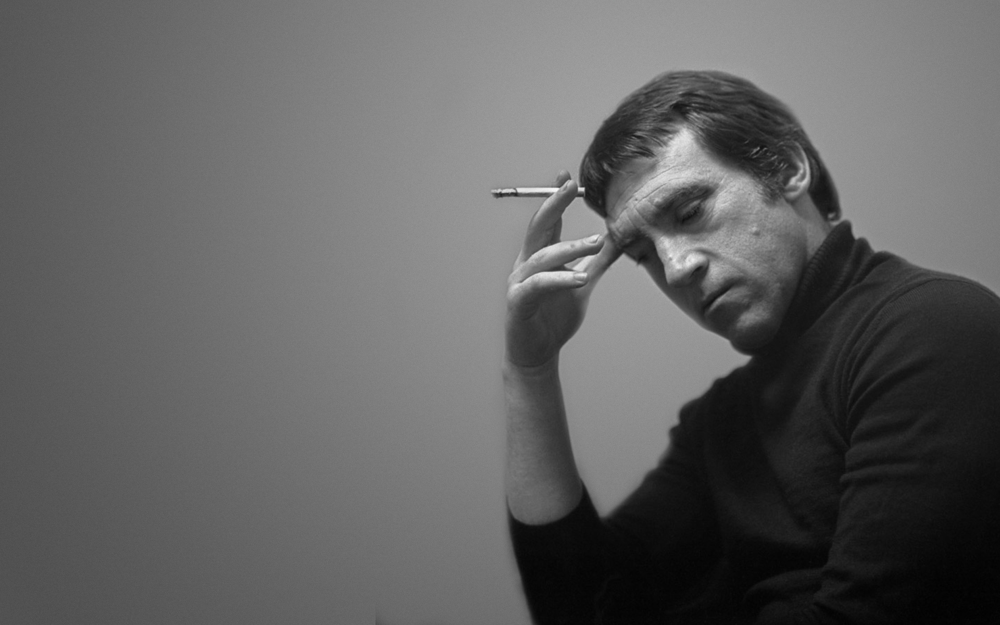

Vladimir Vysotsky

singer-songwriter
poet and actor
1938 - 1980
He became widely known for his unique singing style and for his lyrics, which featured social and political commentary in often humorous street jargon. He was also a prominent stage and screen actor. Though his work was largely ignored by the official Soviet cultural establishment, he achieved remarkable fame during his lifetime, and to this day exerts significant influence on many of Russia's popular musicians and actors years after his death.
For more information, you can see wiki